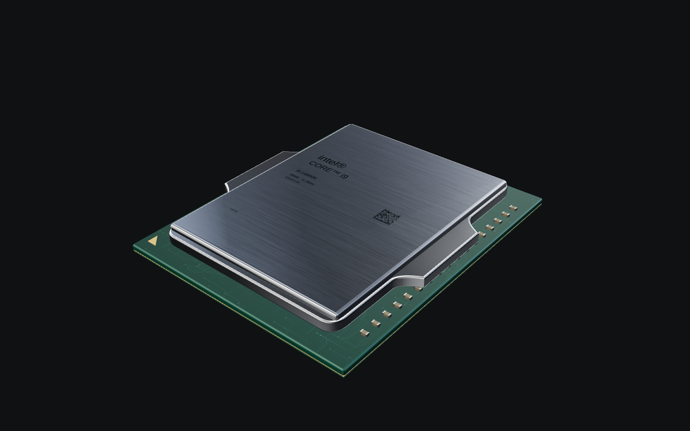

장면의 조명을 그대로
짙은 흑연색 표면에 옅은 경계선만 둡니다 배경 장면의 형태는 흐리게 남겨 설명을 닫았을 때 위치를 잃지 않게 합니다
운영 변경은 ‘관계지도에서 보기’ 버튼 제거만 적용
한 장면, 한 가지 원리
왼쪽에는 이 장면의 부품, 오른쪽에는 설명을 두고 작동 흐름을 아래에 연결합니다
×로 닫은 뒤 ‘원리 자세히’를 누르면
열리고 닫히는 모션도 확인할 수 있습니다
짙은 흑연색 표면에 옅은 경계선만 둡니다 배경 장면의 형태는 흐리게 남겨 설명을 닫았을 때 위치를 잃지 않게 합니다
제목 → 한 줄 요약 → 상세 원리 → 부품 흐름 순서로 읽습니다 작은 영어 제목과 별도 관계페이지 이동은 두지 않습니다
부품을 위에, 본문을 아래에 놓습니다 설명이 긴 경우 내용은 모두 읽을 수 있으며 닫으면 보던 시나리오 위치를 유지합니다

구도 시안크기가 바뀌어도 같은 시작 장면지금은 고정 비율 이미지가 먼저 보이고, 이어지는 3D는 창 크기에 맞춰 카메라를 이동합니다 두 기준이 달라 크기와 원근이 바뀝니다
시작 구간은 카메라의 위치와 바라보는 점을 고정하고, 화면비에 맞춰 보이는 범위만 조절하는 방향을 권합니다 이미지도 같은 기준으로 배치하면 전환 시 크기가 튀는 원인을 없앨 수 있습니다
첫 3D 프레임이 준비된 뒤 같은 위치에서 짧게 겹쳐 전환하고, 사용자가 드래그하면 다음 장면으로 이어집니다
| 현재 화면 | 준비 이미지의 CPU 너비 | 실제 3D CPU 너비 | 전환 시 변화 |
|---|---|---|---|
| 1440 × 900 | 855px | 855px | 없음 |
| 980 × 820 | 582px | 714px | 약 23% 커짐 |
| 820 × 1180 | 487px | 609px | 약 25% 커짐 |
| 390 × 844 | 292px | 293px | 약 0.3% |
모델·재질·조명·카메라·배경을 한 설정으로 공유합니다 준비 이미지를 만들 때도 이 설정으로 렌더합니다
화면 폭뿐 아니라 높이와 부품의 실제 보이는 범위를 함께 사용합니다 모바일·데스크톱 두 이미지의 분기만으로 맞추지 않습니다
창 크기 변경·회전·브라우저 확대를 두 화면에 함께 반영합니다 준비 중 입력도 저장해 첫 장면 인계 이후 이어갑니다